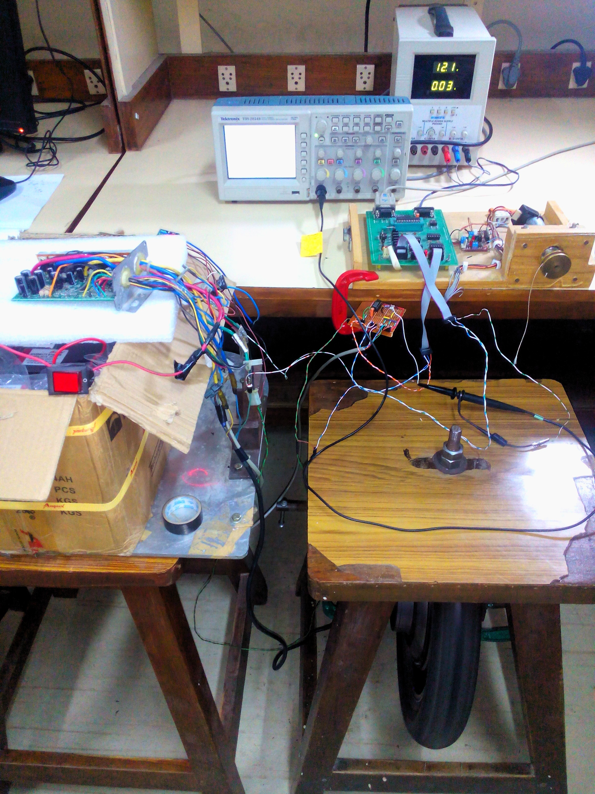

I worked in the Control System Laboratory at IIT Kanpur as a teaching assistant for undergraduate students for about 2 years. The experiments in this laboratory were developed in-house at IIT Kanpur and primarily focused on DC motor control. These experiments are as follows:
- Experiment 1: PMDC motor modeling, identification, and speed control
- Experiment 2: Speed of PMDC motor tracks reference sinusoid
- Experiment 3: Ziegler-Nichols tuning of speed controller of PMDC motor
- Experiment 4: Control of speed using armature current
- Experiment 5: Control of armature current
- Experiment 6: Disturbance observer
Figure: DC Motor Control System Kit at IIT Kanpur. Link to the Laboratory Manual: Click here.

Figure: In-Wheel BLDC Motor Control System developed at Control Systems Lab at IIT Kanpur.
4. Demonstration of a coil winding machine using STM32:
5. Developing a temperature control system using AC power (Considering light bulb for initial testing):
6. Touch Screen Display Design having a reference graph using ESP32: